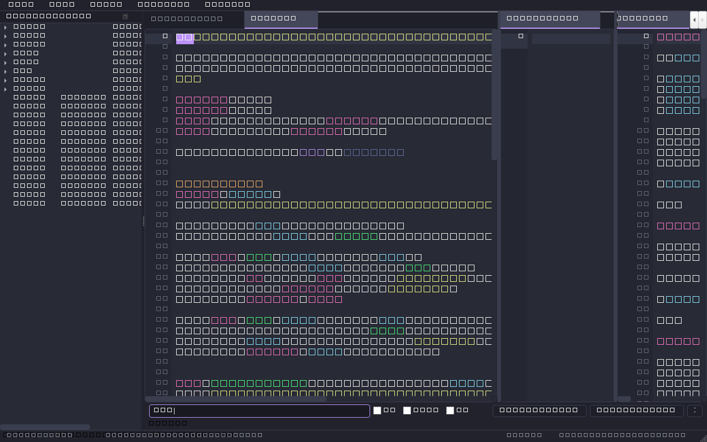
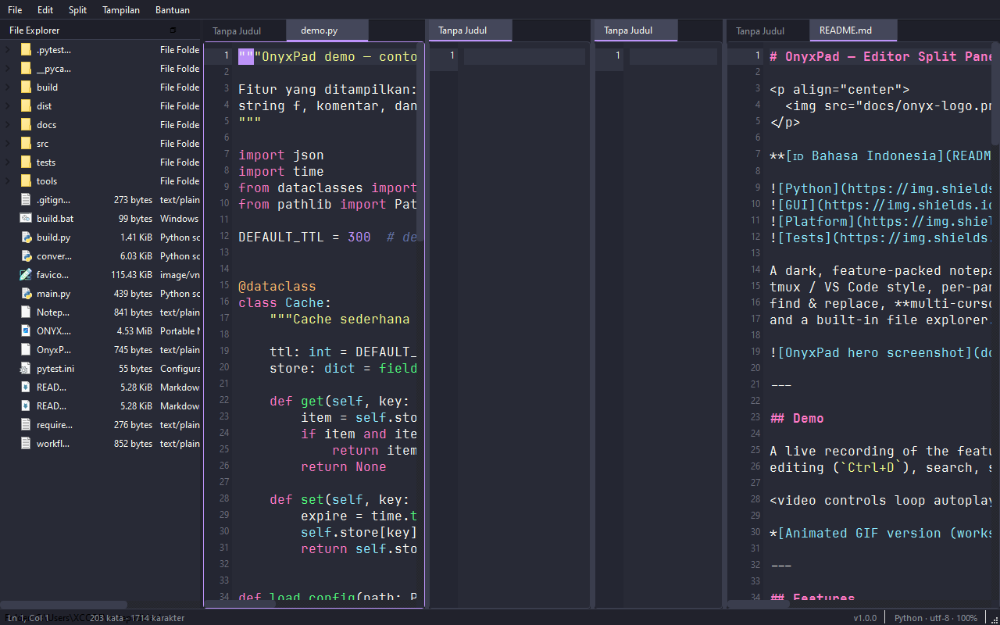

OnyxPad mengabungkan keandalan *multi-split panes* gaya tmux/VS Code dengan perekam sesi terminal *multithreaded* (`Ctrl+Shift+R`). Ringan, sangat cepat, dan bebas ketergantungan berat.

Split layar tanpa batas secara horizontal (`Ctrl+\`) atau vertikal (`Ctrl+'`). Pindahkan tab editor antar-pane dengan fitur *drag & drop* yang responsif.
Rekam sesi terminal Anda secara langsung ke format `.cast` v2 (`Ctrl+Shift+R`). Didukung worker `QThread` terpisah agar antarmuka tidak membeku.
Akses PowerShell, CMD, atau Bash dalam satu klik. Lengkap dengan parsing warna ANSI escape code dan navigasi riwayat perintah.
Mendukung Python, JavaScript, TypeScript, HTML, CSS, C/C++, Java, SQL, JSON, Markdown, dan fitur kursor ganda untuk pengeditan massal.
Navigasi direktori proyek secara instan dengan sidebar interaktif dan pencarian berkas super cepat via `Ctrl+P` (Quick Open).
Performa tinggi dengan footprint memori sangat rendah (~60 MB RAM). Dibuat menggunakan PySide6/Qt6 native tanpa beban Electron.
Format rekaman disimpan secara native dalam standar industri **.cast v2 (JSON Lines)** yang presisi tinggi dan berukuran hanya beberapa kilobyte. Anda juga dapat memutarnya di Player internal atau mengonversinya ke animasi **GIF** dan **MP4**.

Unduh versi executable standalone untuk Windows (~44 MB) atau jalankan langsung dari source code Python.